정보처리산업기사 (1999-04-18 기출문제)
1과목: 데이터 베이스
1. 다음 중 관계데이터베이스의 정규화에 관련된 설명 중 잘못된 것은?
- 정규화는 데이터베이스의 개념적 설계 단계와 논리적 설계단계에서 수행된다.
- 정규화가 잘못되면 데이터의 불필요한 중복을 야기하여 릴레이션 조작시 문제를 일으킨다.
- 현실 세계를 정확하게 표현하는 관계 스키마를 설계하는 작업 으로 개체, 속성, 관계성들로 릴레이션을 만드는 과정에 관한 것이다.
- 정규화 되지 못한 릴레이션의 조작시 발생하는 이상(anomaly) 현상의 근본적인 원인은 여러 가지 종류의 사실들이 하나의 릴레이션에 표현되기 때문이다.
(정답률: 40%)

2. 데이터 언어 중에서 독자적이고 상호 작용 형태로 터미널에서 많이 사용하고 있는 고급명령어형태의 독립된 데이터 조작어를 무엇이라 하는가?
- 데이터 제어어
- 데이터 부속어
- 호스트 언어
- 질의어
(정답률: 59%)
3. 오버플로 처리방법 중에서 여러 개의 해상함수를 준비하였다가 충돌 발생시 새로운 해상함수를 적용하여 새로운 해시표를 생성하는 방법은?
- 개방주소 방법
- 이차검색방법
- 재해상방법
- 체이방법
(정답률: 55%)
4. 다음 설명은 무엇을 말하는가?
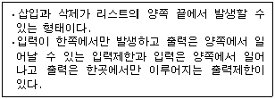
- 스택
- 큐
- 다중 스택
- 데크
(정답률: 56%)
5. 아래의 설명 (ㄱ)과 (ㄴ)이 의미하고 있는 개념을 정확히 설명한 것으로 짝지어진 것은?
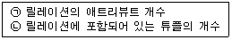
- (ㄱ)차수(degree) (ㄴ)레벨(level)
- (ㄱ)차수(degree) (ㄴ)카디널리티(cardinality)
- (ㄱ)레벨(level) (ㄴ)카디널리티(cardinalty)
- (ㄱ)레벨(level) (ㄴ)차수(degree)
(정답률: 77%)
6. 어떤 릴레이션 R이 2NF를 만족하면서 키에 속하지 않는 모든 애트리뷰트가 기본키에 대하여 이행적 함수 종속이 아니면, 어떤 정규형에 해당하는가?
- 제1정규형
- 제2정규형
- 제3정규형
- BCNF
(정답률: 55%)
7. 릴레이션 R1에 속한 애트리뷰트 A와 릴레이션 R2의 기본키인 B가 동일한 도메인 상에서 정의되었다. 이때 릴레이션 R1의 애트리뷰트 A를 무엇이라 부르며, 이 애트리뷰트에 관련된 제약조건은 무엇인지 정확한 내용으로 짝지어진 것은?
- 외래키 - 참조 무결성 제약조건
- 외래키 - 개체 무결성 제약조건
- 기본키 - 참조 무결성 제약조건
- 기본키 - 개체 무결성 제약조건
(정답률: 61%)
8. 데이터베이스의 정의와 관계없는 것은?
- 데이터베이스는 통합된 데이터이다.
- 데이터베이스는 공용 데이터이다.
- 데이터베이스는 운영 데이터이다.
- 데이터베이스는 실시간 처리 데이터이다.
(정답률: 63%)
9. 사람과 도시 사이의 거주관계에서 사람은 반드시 하나의 도시에 거주해야만 하며, 하나의 도시에는 다수의 사람이 거주한다고 할 때 이를 E-R 다이어그램으로 정확히 표현한 것은?
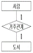
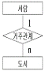
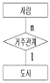
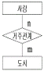
(정답률: 43%)
10. 만약 학생(STUDENT) 테이블에 전산과 학생이 50명, 전자과 학생이 100명, 기계과 학생이 50명 있다고 할 때 다음 SQL 문 (ㄱ),(ㄴ),(ㄷ) 의 실행 결과 튜플 수는 각각 얼마인가? (단 DEPT 필드는 학과명을 의미한다.)
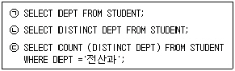
- (ㄱ) 3 (ㄴ) 3 (ㄷ) 1
- (ㄱ) 200 (ㄴ) 3 (ㄷ) 1
- (ㄱ) 200 (ㄴ) 3 (ㄷ) 50
- (ㄱ) 200 (ㄴ) 200 (ㄷ) 50
(정답률: 42%)
11. 아래의 중위식(infix)을 후위식(postfix)으로 바르게 표현한 것은?
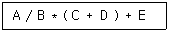
- +＊ / AB + CDE
- CD + AB / ＊ E +
- AB / (CD +)＊ E +
- AB / CD + ＊E+
(정답률: 50%)
12. 다음 SQL문 중에서 구문적 오류가 있는 것은?
- DELETE FROM STUDENT, ENROL WHERE SNO = 100;
- INSERT INTO STUDENT(SNO, SNAME, YEAR) VALUES (100, '홍길동', 4);
- INSERT INTO COMPUTER(SNO, SNAME, YEAR) SELECT SNO, SNAME, YEAR FROM STUDENT WHERE DEPT='CE' ;
- UPDATE STUDENT SET DEPT = (SELECT DEPT FROM COURSE WHERE CNO='C123') WHERE YEAR=4;
(정답률: 31%)
13. E-R(Entity-Reationship) 모델에 관한 내용 중 틀린 것은?
- 1976년 Peter Chen에 의해 제안된 이래 개념적 설계에 가장 많이 사용되는 모델로서더욱 더 일반적으로 쓰이고 있다.
- 최초에는 entity, relationship, attribute와 같은 개념들로 구성되었으나 나중에 일반화 계층같은 복잡한 개념들이 첨가되어 확장된 모델로 발전하였다.
- entity란 가상 세계의 객체를 나타낸다. 예를 들면 사람, 남자, 여자, 회사원, 도시 등과 같은 것들로 사각형으로 나타낸다.
- attribute는 entity 또는 relationship의 성질로 작은 원으로 표시된다.
(정답률: 32%)
14. SQL 언어의 데이터 조작어(DML)에 속하지 않는 것은?
- INSERT 명령
- SELECT 명령
- UPDATE 명령
- ADD 명령
(정답률: 66%)
15. 프로그래머 관점에서 데이터베이스를 바라볼 때 관심 있는 데이터 구조는?
- 외부스키마
- 개념스키마
- 내부스키마
- 스키마
(정답률: 60%)
16. 다음 자료구조의 종류들 중 나머지와 구조가 다른 것은?
- 리스트
- 그래프
- 스택
- 배열
(정답률: 70%)
17. 관계 데이터 모델에서 하나의 애트리뷰트가 취할 수 있는 같은 타입의 원자(atomic)값들의 집합을 무엇이라 하는가?
- 속성
- 스킴
- 도메인
- 제약조건
(정답률: 65%)
18. 시스템 카탈로그에 대한 설명으로 부적합한 것은?
- 시스템 데이터베이스이다.
- 자료사전의 역할을 한다.
- 데이터베이스에 대한 통계정보가 저장될 수 있다.
- 사용자 데이터베이스이다.
(정답률: 64%)
19. 역(inverted) 파일과 다중 리스트 파일에 대한 비교, 설명 중 잘못된 것은?
- 다중 리스트 방식은 인덱스 관리가 더 용이하다.
- 역 인덱스 방식은 질의문 처리 능력에서 더 우월할 수가 있다.
- 역 인덱스 방식은 이 인덱스를 사용하지 않는 프로그래머에게 더 투명하다.
- 다중 리스트 방식은 동일한 키의 모든 레코드를 검색하는 성능이 더 우수하다.
(정답률: 25%)
20. 한 개 이상의 논리적 레코드를 하나의 물리적 레코드, 즉 블록으로 저장하는 것을 블록화(blocking)라고 한다. 블록화에 대한 다음의 설명 중 관련이 없는 것은?
- 입출력 시간을 줄일 수 있다.
- 블록 간의 갭으로 인한 기억 공간의 낭비를 줄일 수 있다.
- 버퍼의 크기만큼 주기억 장치 내의 사용 공간이 줄어든다.
- 고정길이 블록화, 신장된 가변 길이 블록화, 비신장된 가변 길이 블록화가 있다.
(정답률: 28%)
2과목: 전자 계산기 구조
21. 중앙처리장치의 정보를 기억장치에 기억시키는 것을 무엇이라고 하는가?
- LOAD
- STORE
- TRANCE
- BRANCH
(정답률: 62%)
22. 어느 자료의 일부분 또는 자료 전체를 지울 때 사용하는 연산은?
- Move
- AND
- OR
- Complement
(정답률: 50%)
23. 오류(error) 정보를 검출하기 위해 사용하는 비트는?
- sign bit
- parity bit
- check bit
- 위 모두 아니다.
(정답률: 70%)
24. 오퍼랜드(operand) 부분에 데이터를 기억하는 방법에 해당 되는 것은?
- 상대 번지 지정
- 이미디어트(immediate) 번지 지정
- 변형 페이지 제로 번지 지정
- 인덱스 번지 지정
(정답률: 30%)
25. 다음 출력 결과는?
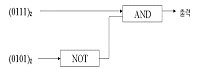
- (0000)2
- (0101)2
- (1111)2
- (0010)2
(정답률: 62%)
26. 독립된 기능을 가진 복수의 컴퓨터가 하드웨어, 소프트웨어 및 데이터 등의 자원을 공용할 수 있도록 통합된 시스템을 말하는 것은?
- 타임셰어링 시스템
- 리모트 배치 시스템
- 리얼타임 시스템
- 컴퓨터 네트워크 시스템
(정답률: 60%)
27. 서브루틴과 연관되어 사용되는 명령은?
- Sifte
- Call과 Return
- Skip과 Jump
- Increment와 Decrement
(정답률: 59%)
28. 0-주소 인스트럭션 형식의 특징이 아닌 것은?
- 연산을 위한 스택을 갖고 있으며, 연산 수행 후에 결과를 스택(stack)에 보존한다.
- 자료를 얻기 위하여 스택에 접근할 때는 top이 지정하는 곳에 접근한다.
- unary 연산 경우에는 2개의 자료가 필요하고, top이 지정하는 곳의 자료를 처리하고, 결과는 top 다음 위치에 기억한다.
- binary 연산인 경우 2개 자료가 필요하고, 스택 상단부 2자리에 지정한다.
(정답률: 47%)
29. 가상기억 체제를 설명한 것 중 옳은 것은?
- 컴퓨터의 구조 및 조작이 간편해 진다.
- 주기억 장치의 용량이 증대된다.
- 주소 공간이 확대되어 주기억 장치의 용량이 큰 것처럼 동작된다.
- 명령 수행시간이 빨라진다.
(정답률: 55%)
30. 정보의 단위로 가장 적은 것은?
- Byte
- Word
- Bit
- Record
(정답률: 68%)
31. 인스트럭션(instruction)의 수행 과정이 아닌 것은?
- 주소 변환
- 명령 인출
- 오퍼랜드 인출
- 사이클 실행
(정답률: 37%)
32. 자료의 외부적 표현방식으로 가장 흔히 사용되는 code는?
- ASCII
- Excess 3
- Gray
- 4-bit BCD
(정답률: 60%)
33. 기억장치에서 1234H 번지는 (A)페이지에서 (B)번지라고 할 수 있다. A와 B는?
- A=1234H, B=1234H
- A=1234H, B=OH
- A=34H, B=12H
- A=12H, B=34H
(정답률: 39%)
34. 클라이언트/서버 구조에 대한 설명 중 옳지 않은 것은?
- 잘 설계된 구조는 하나의 제품으로 구현되어야 한다.
- 구조는 제품을 만들 때 지침으로 사용하는 정의, 규정과 조건들이 집합이다.
- 제품이란 한 구조를 특정하게 구현한 것이다.
- 구현한 제품이 없는 구조만은 전혀 쓸모가 없다.
(정답률: 68%)
35. 문자의 위치 변환에 이용하는데 가장 효율적인 동작은 ?
- 로테이트(rotate) 동작
- 산술 시프트(shift)
- 논리 시프트
- 좌측 및 우측 시프트
(정답률: 44%)
36. 레지스터를 사용하지 않고 연산 수행을 하는 것은 ?
- 10진 연산
- 부동 소수점 연산
- 고정 소수점 연산
- 산슬 Shift
(정답률: 28%)
37. 다음 컴퓨터 사이클 제어 중에서 오퍼랜드의 번지를 읽어내는 기능은?
- 간접 사이클
- 실행 사이클
- 가로채기 사이클
- 명령 사이클
(정답률: 44%)
38. Computer system에 예기치 않은 일이 발생했을 때 제어프로그램에게 알려주는 것을 무엇이라 하는가?
- Interrupt
- PSW(Program Status Word)
- Problem state
- Program library
(정답률: 72%)
39. 명령 코드가 명령을 수행할 수 있게 필요한 제어 기능을 제공해 주는 것은?
- 레지스터
- 누산기
- 스택
- CPU에 있는 제어 장치
(정답률: 46%)
40. DMA의 장점으로 해당되는 것은?
- 속도가 느린 메모리가 사용될 수 있다.
- 마이크로프로세서가 데이터 전송을 제어한다.
- 데이터 전송회로가 보다 덜 복잡하다.
- 보다 빠른 데이터의 전송이 가능하다.
(정답률: 46%)
3과목: 시스템분석설계
41. 입력정보의 매체화에 관한 설계시 입력매체 장치를 선택할 때 검토하지 않아도 되는 사항은?
- 시스템의 이행(移行), 운용 비용
- 이용자의 취향
- 입력정보 발생 분야에서의 업무 특성
- 입력매체와 매체화 장치의 특성
(정답률: 64%)
42. 다음과 같이 구성되는 코드는?
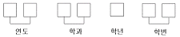
- 문자형 코드
- 순서 코드
- 그룹 분류 코드
- 구분 코드
(정답률: 63%)
43. 같은 파일 형식을 갖는 2개 이상의 파일을 하나의 파일로 통합 처리하는 데이터 프로세스의 기본 형식은?
- 매체변환(conversion)
- 정렬(sort)
- 병합(merge)
- 조합(matching)
(정답률: 72%)
44. 원시 코드 라인수(LOC)기법에 의하여 예측된 총 라인수가 30,000 라인, 개발에 참여할 프로그래머가 5명, 프로그래머들의 평균생산성이 월간 300 라인일 때 개발에 소요되는 기간은?
- 10 개월
- 15 개월
- 20 개월
- 30 개월
(정답률: 64%)
45. 중량, 용량, 거리, 크기, 면적 등의 물리적 수치를 직접 코드에 적용시키는 코드 방식은?
- 순차 코드(sequence code)
- 표의 숫자 코드(significant digit code)
- 블록 코드(block code)
- 기호 코드(mnemonic code)
(정답률: 62%)
46. 경리 장부 처리시 차변, 대변의 한계 값을 체크하는데 사용하는 방법으로 대차의 균형이나 가로, 세로의 합계가 일치하는 가를 체크하는 방법은?
- Limit check
- Matching check
- Balance check
- Batch total check
(정답률: 56%)
47. 시스템 개발 주기를 폭포형(Waterfall model)으로 표현할 때 그 순서가 맞는 것은?
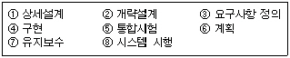
- ③⑥②①④⑤⑧⑦
- ⑥③②①④⑤⑧⑦
- ⑥②③①⑤④⑧⑦
- ③⑥④②①⑤⑧⑦
(정답률: 39%)
48. 구조적 분석에서 자료사전(data dictionary) 작성시 고려 사항과 가장 거리가 먼 것은?
- 이름이 중복되어야 한다.
- 갱신하기 쉬워야 한다.
- 이름을 가지고 정의를 쉽게 찾을 수 있어야 한다.
- 정의하는 방식이 명확해야 한다.
(정답률: 80%)
49. 프로그램의 품질 개선과 생산성 향상을 위한 기법으로 가장 적절한 것은 ?
- IPT
- 상향식 방식
- 하향식 방식
- SADJ
(정답률: 41%)
50. 시스템의 판정 기준이 아닌 것은?
- 시스템의 능력성
- 시스템의 신뢰성
- 시스템의 유연성
- 시스템의 추가성
(정답률: 57%)
51. 객체지향 방법론에서 시스템의 형성 구조를 모형화하는 데이터 흐름 다이어그램(DFD)을 사용해서 객체를 분해하고, 객체들 간의 인터페이스를 찾아 이것들을 Ada 프로그램으로 변환시키는 기법은?
- 코드(code)와 요던(Yourdon) 기법
- Shlaer &Mellor 기법
- 룸바우(Rumbaugh) 기법
- Booch 기법
(정답률: 36%)
52. 출력정보의 내용에 관해서 설계할 때, 고려해야 할 사항이 아닌 것은?
- 출력항목 명칭과 배열
- 출력항목의 자리수와 문자구분
- 집계구분(소계, 중계, 합계 등)
- 기밀성의 유무와 보존
(정답률: 46%)
53. 시스템의 기본 요소 중에서 처리결과를 평가하여 불충분한 경우에 목적 달성을 위해 반복 처리하는 요소는?
- process(프로세스)
- feed back(피드백)
- output(출력)
- control(통제)
(정답률: 72%)
54. 처리될 파일의 정보가 기록순서나 코드순서와 같은 논리적 순서와 관계없이 특정한 방법으로 키 변환을 하여 임의로 자료를 보관하고 처리시에도 필요한 장소에 직접 접근하도록 만든 파일은?
- 랜덤 파일
- 순차 파일
- 순서 파일
- 색인 순차 파일
(정답률: 54%)
55. 코드의 기능이라고 볼 수 없는 것은?
- 식별기능
- 검색기능
- 분류기능
- 배열기능
(정답률: 49%)
56. HIPO는 시스템의 설계 또는 시스템 문서화용으로 사용되고 있는 기법이다. HIPO를 사용하는 이점과 거리가 먼 것은?
- 상향식 개발이 쉽다.
- 보기 쉽고 알기 쉽다.
- 변경, 유지보수가 쉽다.
- 기능과 데이터의 의존관계를 동시에 표현할 수 있다.
(정답률: 53%)
57. 마스터 파일을 갱신하거나 수정하기 위해 사용되는 파일은?
- 소트 파일
- 체크 파일
- 합성 파일
- 트랜잭션 파일
(정답률: 65%)
58. 파일 매체의 설계에 관한 설명으로 잘못된 것은?
- 어느 매체가 가장 업무에 적합한가를 충분히 검토하여 선정한다.
- 매체 선정시 매체의 특성을 잘 이해하는 것이 좋다.
- 매체 선정시 시간, 용량, 비용 등을 검토하여야 한다.
- 파일 매체에 대한 검토는 액세스 형태만 충분히 검토하면 된다.
(정답률: 66%)
59. 시스템 분석가(SA)의 기본적인 조건과 거리가 먼 것은?
- 기업 목적의 정확한 이해
- 개인의 결단력과 추진력
- 업무의 현상 분석능력
- 컴퓨터의 기술과 관리기법의 이해
(정답률: 63%)
60. 복잡한 처리, 까다로운 조건 등을 알기 쉽게 표현하는 의사결정 테이블(Decision table)의 표준 양식에 사용되지 않는 란은?
- 입출력 항목란
- 조건 항목란
- 행동 항목란
- 규칙란
(정답률: 33%)
4과목: 운영체제
61. 운영체제가 처리기 경영에서 무시하여도 좋은 항목은?
- 디스크와 같은 보조 기억 장치의 접근 시간
- 프로세스가 일괄처리 형태인가, 대화형 처리 형태인가하는 점
- 계산 위주(cpu-bound)와 입출력 위주(i/o-bound)의 균형문제
- 프로세스가 높은 우선순위의 프로세스에 의해 선점(preemption)되는 빈도
(정답률: 41%)
62. 페이지 번호와 변위로 구성된 가상 주소 중 페이지 번호로 페이지 사상 표(page mapping table)에서 구한 실기억 장치의 주소와 가상 주소 중의 변위로 실제 주소를 변환하는 방법을 갖는 페이지 사상 법은?
- 직접 사상
- 연관 사상
- 요구 페이징
- 연관/직접 사상
(정답률: 30%)
63. 다음 중 file의 특성을 결정하는 기준이 아닌 것은?
- 소멸성(volatility)
- 활성률(activity)
- 크기(size)
- 볼륨(volume)
(정답률: 42%)
64. 파일 시스템에서 파일을 블록 단위로 저장하는 기법이 아닌 것은?
- 블록체인 기법
- 연속 블록 할당 기법
- 인덱스 블록체인 기법
- 블록 단위의 파일 사상
(정답률: 25%)
65. 시분할 시스템(time sharing system)에 관한 다음 기술 중 적절하지 못한 것은?
- 다중 프로그래밍 기법이 최초로 사용된 시스템이다.
- 많은 사용자들이 동시에 컴퓨터를 공유하도록 한다.
- 각 사용자는 기억 장치에 독립된 프로그램을 갖는다.
- 컴퓨터를 대화식(interactive)으로 사용한다.
(정답률: 27%)
66. 복수의 프로세스(process)가 가능하지 못한 상태를 무한정 기다리고 있는 상태를 무엇이라 하는가?
- 교착상태(deadlock)
- 병목상태(bottleneck)
- 차단상태(blocked)
- 임계영역(critical section)
(정답률: 69%)
67. 페이지 교체 기법 중 시간 오버헤드를 줄이는 기법으로서 참조비트(referenced bit)와 변형비트(modified bit)를 필요로 하는 방법은?
- FIFO
- LRU
- LFU
- NUR
(정답률: 59%)
68. 아래의 a, b, c, d 작업 중 운영체제가 CPU 스케줄링 기법으로 HRN 방식을 구현했을 때 가장 우선순위가 높은 것은?
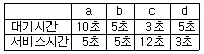
- a
- b
- c
- d
(정답률: 53%)
69. 클라이언트/서버 시스템의 장점이 아닌 것은?
- 개방 시스템을 받아들이도록 참작하고 독려한다.
- 특별히 협동처리를 위해 설계된 분산응용은 비분산보다 간단하다.
- 처리할 자료의 출처 가까이서 처리작업이 진행되도록 할 수 있다.
- 고성능 워크스테이션에서 가능한 그래픽 사용자 인터페이스를 용이하게 쓸 수 있다.
(정답률: 35%)
70. 분산처리 시스템의 위상(topology)에 따른 분류에서 성형(star) 구조에 대한 설명이다. 틀린 것은?
- 터미널의 증가에 따라 통신 회선수도 증가한다.
- 한 노드의 고장은 다른 노드에 영향을 주지 않는다.
- 각 노드들은 point-to point 형태로 모든 노드들과 직접 연결된다.
- 제어가 집중되고 모든 동작이 중앙 컴퓨터에 의해 감시된다.
(정답률: 44%)
71. 다음 중 RR(Round-Robin) 스케줄링 기법에서 시간 할당량에 대한 설명으로 올바르지 않은 것은?
- 시간 할당량이 너무 작으면 문맥교환 오버헤드가 작아지게 된다.
- 시간 할당량이 너무 작으면 문맥교환이 자주 일어나게 된다.
- 시간 할당량이 너무 크면 FIFO 기법과 거의 같은 형태가 된다.
- 시간 할당량이 너무 작으면 시스템은 대부분의 시간을 프로세서의 스위칭에 소비하고 실제 사용자들의 연산은 거의 못하는 결과가 초래된다.
(정답률: 44%)
72. UNIX에서 파일이나 디렉토리 파일이 생성되면 그 속성을 등록하게 된다. 이러한 파일의 속성을 나타내는 정보들을 저장하고 있는 것은?
- 디렉토리
- 커널
- inode
- 버퍼
(정답률: 52%)
73. 그래프 탐색 알고리즘이 간단하며, 원하는 파일로 접근이 쉬우며, 파일의 제거를 위하여 자투리 모음(Garbage-Collection)을 위한 참조 계수기가 필요한 디렉토리 구조는?
- 1단계 디렉토리
- 2단계 디렉토리
- 일반 그래프 디렉토리
- 비순화 그래프 디렉토리
(정답률: 42%)
74. 몇 개의 작업을 동시에 주기억 장치에 적재하여 실행하는 처리 기법을 무엇이라고 하는가?
- 일괄처리
- 다중 프로그래밍
- 대화식 처리
- 온라인 처리
(정답률: 54%)
75. 연속 및 불연속 기억장치 할당에 관한 설명으로 올바르지 않은 것은?
- 불연속 기억장치의 할당은 주기억 장치 내의 이용 부분을 여러 작은 부분으로 나누어 실행할 수 있다.
- 불연속 기억장치에서는 분산되어 있는 블록 또는 조각들을 반드시 인접하여 적재하여야한다.
- 가상기억 장치에서는 연속 기억 장치보다는 불연속 기억 장치 할당 기법을 채택하여 사용하고 있다.
- 연속 기억장치 할당 기법에서는 오버레이 기법을 활용하여 주기억장치보다 더 큰 프로그램을 실행할 수 있게 하였다.
(정답률: 29%)
76. 처리기 스케줄러(process scheduler)가 하는 일은?
- 하나의 프로세스를 준비(ready) 상태에서 실행(run) 상태로 만든다.
- 하나의 프로세스를 대기(blocked) 상태에서 실행(run) 상태로 만든다.
- 하나의 프로세스를 제출(submit) 상태에서 준비(ready) 상태로 만든다.
- 하나의 프로세스를 제출(submit) 상태에서 대기(blocked) 상태로 만든다.
(정답률: 50%)
77. 기억 장치에 관한 설명 중 가장 거리가 먼 것은?
- 보조 기억 장치보다는 주기억 장치의 액세스 시간이 작다.
- 기억 용량이 작을수록 비트 당 기억 장치 비용이 증가한다.
- 중앙 처리 장치는 캐시 기억 장치와 보조 기억 장치에 저장된 프로그램과 데이터를 직접 참조할 수 있다.
- 기억 장치는 각기 자신의 주소를 갖는 워드 또는 바이트들로 구성되어 있다.
(정답률: 14%)
78. 다음 중 UNIX의 특징이 아닌 것은?
- 대화식 시스템이다.
- 이식성이 매우 높다.
- 멀티유저 시스템이다.
- 대부분 어셈블리 언어로 구현되었다.
(정답률: 62%)
79. 프로세스가 CPU를 점유하고 있는 상태를 무엇이라 하는가?
- 실행(running) 상태
- 준비(ready) 상태
- 보류(block) 상태
- 조건만족(wakeup) 상태
(정답률: 57%)
80. 다음과 같은 세그먼트 테이블이 있을 때, 실제 주소는 얼마가 되겠는가? (단, 가상 주소＝s(2,100))
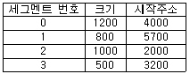
- 1500
- 1600
- 2000
- 2100
(정답률: 38%)
5과목: 정보통신개론
81. 통신용 단말기로서 사용되지 않는 것은?
- 전화기
- 퍼스널 컴퓨터
- 팩시밀리
- 중계기
(정답률: 44%)
82. 다음 중 서로 관련성이 먼 것은?
- ENIAVC-최초의 컴퓨터
- SAGE-상업용 정보통신 시스템
- SABRE-항공기 좌석예약 응용
- ALOHA-실험용 무선패킷 교환망
(정답률: 60%)
83. 데이터 전송 에러 검출 방식 중에서 집단 에러에 대해 신뢰성 있는 에러 검출을 위해 다항식 코드를 사용하여 에러 검사를 하는 방식은?
- Parity Check
- Block Sum Check
- CRC
- ARQ
(정답률: 36%)
84. ISDN 서비스에서 베어러 서비스(bearer service)란?
- 상위계층 및 하위계층 서비스 모두를 제공하는 서비스를 말한다.
- 하위계층 기능만을 제공하는 서비스를 말한다.
- G4 팩시밀리나 지능망 전화 등의 서비스를 말한다.
- 단말을 포함한 End-End 간의 서비스를 말한다.
(정답률: 30%)
85. 다중화기 중 구조가 간단하고 주로 저속도의 장비에 이용 가능하며 멀티포인트 방식 구성에 적합한 것은?
- 주파수 분할 다중화기
- 시분할 다중화기
- 공간 시분할 다중화기
- 파장 분할 다중화기
(정답률: 40%)
86. 패킷형으로 동작하는 단말 장치들을 위한 데이터 단말 장치(DTE)와 데이터 회선 종단 장치(DCE) 간의 인터페이스는?
- X.25
- X.29
- X.3
- X.22bis
(정답률: 65%)
87. 데이터 통신의 에러 체크 방식 중 수직패리티 체크 방식은 1개 부호 중 수직에 대한 1의 bit수를 어떻게 하고 있는가?
- 홀수가 되도록 한다.
- 3의 배수가 되도록 한다.
- 짝수가 되도록 한다.
- 5개가 되도록 한다.
(정답률: 44%)
88. 대학, 병원 및 연구소 등 근거리 통신망이 필요하면서도 여건이 안되는 기관 간에 인근전화국의 데이터 교환망과 기존 통신망을 연동시켜 구성하는 통신망은?
- PBX
- CO-LAN
- VAN
- MAN
(정답률: 43%)
89. 모뎀(MODEM)의 작용은?
- 디지털 데이터를 아날로그 신호로 변환시킨다.
- 아날로그 데이터를 디지털 신호로 변화시킨다.
- 디지털 신호를 디지털 데이터로 변환시킨다.
- 아날로그 신호를 아날로그 데이터로 변환시킨다.
(정답률: 53%)
90. TCP/ IP에 관한 설명으로 잘못된 것은?
- TCP 프로토콜과 IP 프로토콜의 결합적 의미로서 TCP가 IP보다 상위층에 존재한다.
- OSI 표준 프로토콜과 가까운 망구조를 가지고 있다.
- TCP는 OSI 참조모델의 네트워크계층에 대응되고, IP는 트랜스포트계층에 대응된다.
- UNIX 운영체제가 탑재된 워크스테이션이나, 미니컴퓨터를 주축으로 하여 운영되고 있다.
(정답률: 41%)
91. 패킷(packet) 교환망의 교환처리 순서제어로 틀린 것은?
- 정상적인 패킷은 그대로 보내고 받는다.
- 중복된 패킷은 폐기한다.
- 분실된 패킷은 재송시켜 정정한다.
- 역전된 패킷은 후속되는 것만을 폐기한다.
(정답률: 53%)
92. 데이터 링크 계층의 주요 기능에 해당되지 않는 것은?
- 프레임동기
- 출력확인
- 오류제어
- 흐름제어
(정답률: 46%)
93. ISDN에 대해 바르게 설명한 것은 ?
- 아날로그 통신기술을 전제로 하고 있다.
- 음성, 비음성 데이터 서비스의 각 분야를 독립적으로 처리하는 통신망이다.
- 한 빌딩 내 또는 특정지역 내의 복수의 컴퓨터, 워드프로세서 등을 접속하는 상호 통신망이다.
- 모든 통신 서비스를 단일 통신망으로 통합한 것이다.
(정답률: 35%)
94. 정보통신 시스템의 처리방식에 해당되지 않는 것은?
- 온-라인(On-line) 처리방식
- 트래픽(Traffic) 처리방식
- 거래(Transaction) 처리방식
- 실시간(time sharing) 처리방식
(정답률: 45%)
95. 패킷교환망의 주요 기능으로서 옳지 않은 것은?
- 논리채널
- 경로선택제어
- 트래픽제어
- 엑세스제어
(정답률: 20%)
96. OSI 참조 모델의 상위계층(higher layer)에 해당되지 않는 것은?
- 세션계층(session layer)
- 표현계층(presentation layer)
- 응용계층(application layer)
- 망계층(network layer)
(정답률: 54%)
97. 다음 교환방식 중에서 전송지연 시간이 가장 긴 것은 ?
- 메시지 교환방식
- 음성용 회선 교환방식
- 패킷 교환방식
- 데이터용 회선 교환방식
(정답률: 38%)
98. 광통신 시스템의 전송모드 종류가 아닌 것은 ?
- 복합모드
- 멀티모드 스텝 인덱스
- 단일모드
- 멀티모드 그래드 인덱스
(정답률: 30%)
99. 데이터 전송 중에 오류검출 및 정정을 수행하는 장치는?
- 신호 변환 장치
- 통신 제어 장치
- 다중화 장치
- 망 제어 장치
(정답률: 58%)
100. 원거리에서 일괄처리하는 시스템 터미널은?
- 인텔리전트 터미널
- 더미(Dummy) 터미널
- 리모트 배치 터미널
- 키보드 터미널
(정답률: 48%)
정규화는 데이터베이스의 개념적 설계 단계와 논리적 설계 단계에서 수행되며, 이를 통해 현실 세계를 정확하게 표현하는 관계 스키마를 설계합니다. 정규화가 잘못되면 데이터의 불필요한 중복을 야기하여 릴레이션 조작시 문제를 일으키며, 이상(anomaly) 현상의 근본적인 원인은 여러 가지 종류의 사실들이 하나의 릴레이션에 표현되기 때문입니다.